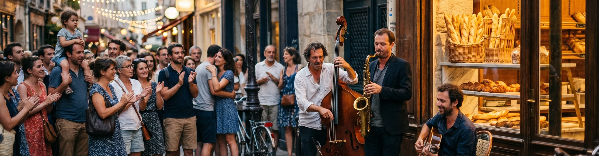

La Fête de la Musique — the one night a year when every street, every doorway, every café in France becomes a stage.
It's not a festival. It's a national agreement to play music for free, anywhere, all night.
Here is the thing French Atelier teaches that nobody tells you about France: the language was built for nights like this. Faire la fête. Tomber sur quelqu'un. L'ambiance. There are words for every texture of a shared evening.
Three of them inside — with the French you'll need to be part of the night, not a tourist watching it.